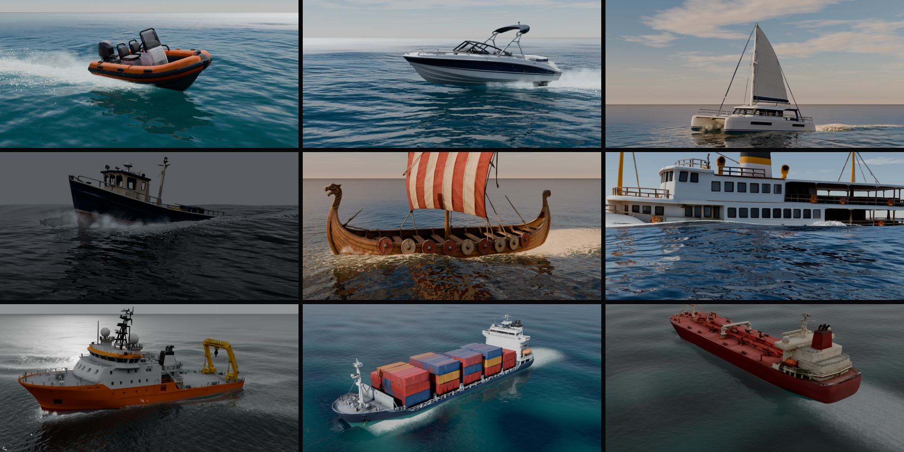
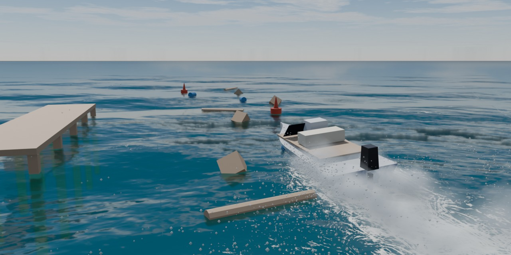

Take the helm. Render the drive.
Steer a boat or a ship with W A S D across an ocean that runs live in your viewport. The hull cuts through the waves and leaves a wake, foam and spray. Stop, and your drive is a take you can bake and render in EEVEE or Cycles like any other animation.
Every clip on this page is rendered from a take made with the add-on.
The real interface with the full look, captured one frame per simulation step, so it plays smoother than a live drive. Measured live rates are below.
Throttle, steering, rider lean and a chase or free camera. The readout shows speed, throttle and how much of the hull is wet.
Your controls are recorded as keyframes on the rig. Edit them in the Graph Editor, or key them by hand and never touch the keyboard.
The wake, foam and spray bake to EXR files and play back with no Python running. A re-simulated bake matches the drive bit for bit.

Click a preview, then Add Library Vessel. It creates the ocean, the sky and the chase camera if the scene has none. Each vessel has its own mass, draft and engine, so a tanker takes its time and a speedboat planes.
| Vessel | Mass | Top speed |
|---|---|---|
| Speedboat 7.5 m | 2.6 t | 51.5 kn |
| Inflatable Boat (RIB) 5.5 m | 0.6 t | 36.5 kn |
| Sailing Catamaran 13 m | 10.3 t | 6.5 kn* |
| Fishing Boat 12 m | 55.9 t | 11.7 kn |
| Viking Longship 23 m | 170 t | 11.6 kn* |
| Yacht Ship 50 m | 2,234 t | 9.3 kn |
| Research Vessel 60 m | 3,084 t | 10.0 kn |
| Container Ship 180 m | 90,995 t | 17.2 kn |
| Oil Tanker 230 m | 173,307 t | 19.1 kn |
Measured in calm water in the add-on. *Calm air: the sails add drive with wind. Engines are tuned for driving, not real installed powers. The models were generated with an AI tool (Tripo AI) and set up for the simulation.
Select any boat, an FBX, glTF or OBJ import or a kit-bash, at any scale and heading, and press Setup Selected.
Float Selected Ship puts a model on the water as a moored ship or a fixed obstacle, so you can fill a harbour or ram something.
The longship and the catamaran sail: W/S set the sail with the engine, and the wind comes from the sea state.
Thousands of waves in three FFT cascades, a JONSWAP wind sea plus swell. The hull, the floating objects, the spray and the foam all read the same surface. A sum of Gerstner waves is there too, when memory matters more.
One click on Water Type changes the waves, the colour, the sky and the light.
The Storm water type, rendered in Cycles.
A wave solver on a grid round the vessel forms dispersive Kelvin wakes that blend into the open sea. Foam starts at the bow wave, the spray root and the churned water behind the stern, then streaks along the course and breaks up into lace.
Create Coast Scene builds a bay you can drive: sand, a sand bar, a rocky point and dunes, all from one height map, so what you see and what the hull touches agree. A boat driven onto the beach slides up the sand and stops.
The shore waves are the heaviest part of the add-on: see the numbers below. Drive, bake and render them.
Below sea level the water hides things with distance. You see the surface from below with Snell's window and the sun in it, light beams, the sand, and fogged hulls. Parts of hulls and objects below the waterline turn blue-green with depth, also from above. In EEVEE and Cycles.
The switch is at sea level, not at the wave above the camera, so right at the surface it can be wrong.
Make Floating gives any mesh a physics body with buoyancy; Make Collider makes a fixed obstacle. Crates, barrels, buoys and logs bob and drift, ride the wake and collide with the vessel, each other, piers and the coast. The boat feels them too: it slows when it hits a heavy log.
Shapes are convex hulls; a concave object made of pieces can use Convex Parts.

Draw the course as a curve, set the speed and press Drive Along Path. The vessel steers itself, slows in sharp turns and records a normal take. A closed curve is a circuit.
Add Cinematic Cameras makes Drone, Side, Onboard and Orbit cameras that follow the vessel. Cut Between Them adds timeline markers, so Ctrl+F12 renders a cut sequence straight away.
Measured on one machine with version 1.13.2: RTX 4060 8 GB, Ryzen 9 7950X, 32 GB RAM, a 3440 x 1400 Blender window with the sidebar open, Material Preview, the speedboat, moderate sea. Yours will differ. Simulation 1.0 means real time.
| Scene | Fast View While Driving | Viewport redraws per second | Simulation |
|---|---|---|---|
| Open sea | on (default) | 27 to 28 | 0.98 to 1.0 |
| Open sea | off, the full look | 12 | not measured |
| Coast with shore waves | on | 7 | 0.45 |
| Coast, shore waves off | on | 16 | 0.97 |
Fast View leaves out EEVEE's shadows, ray tracing and see-through water during the drive only, so a live drive looks simpler than the render. They come back when you stop. The interface parts of the promo video were captured frame by frame with the full look, so they play smoother than a live drive on this machine.
The code was written with an AI coding assistant, directed, tested and rendered by the developer. The nine library models were generated with Tripo AI and then set up for the simulation: hull bodies, mass, engines, names. No model in the renders is a paid asset.
The FFT sea, the shore waves, the surf foam, the caustics and the sand follow the method of Tidewater, an open-source browser game by D. Greenheck, under its MIT licence. The notice comes with the add-on.
The add-on's code is GPL-3.0-or-later. You may use the library models in your own renders, animations and games, but not resell or redistribute them as models on their own.
No. Everything is in the Ocean tab of the sidebar, and a new boat gets its values automatically. They are all there if you want to tune them.
The render looks better. Live driving uses Fast View by default, and Post Sim adds finer foam and particle whitewater to a recorded take.
Yes. A baked take plays from EXR files and keyframes with no operator running, in the viewport and in F12 renders.
No. Everything runs locally.